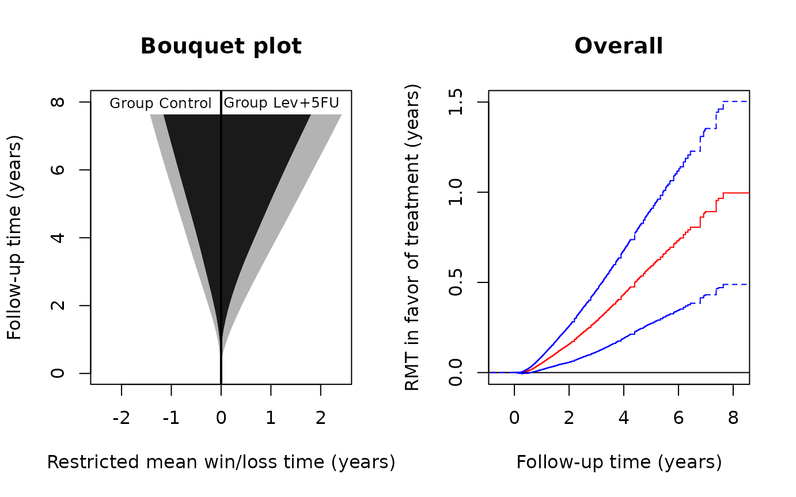
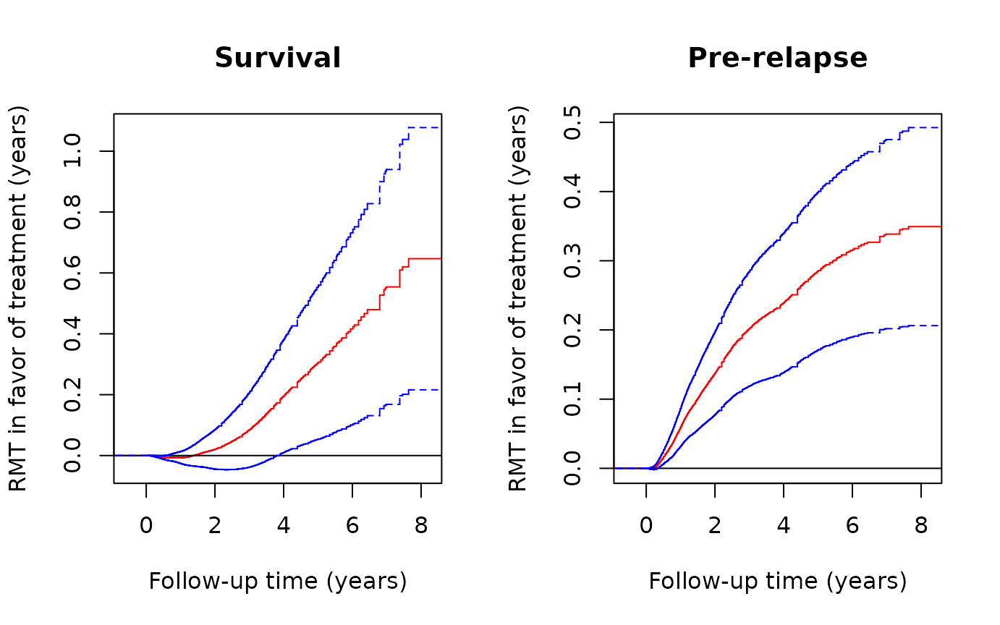

Analysis of multistate hierarchical outcomes by the restricted mean time in favor of treatment
Lu Mao
multistate.RmdINTRODUCTION
This vignette demonstrates the use of the R-package rmt
for the restricted-mean-time-in-favor-of-treatment approach to the
analysis of multiple prioritized outcomes.
Data type
To recap the methodology, we formulate patient experience with
multiple events as a multistate process
taking values in the ordered set
,
with a larger integer representing a more series condition. For example,
if a cancer patient is in a state of remission,
if the cancer has relapsed,
if it has metastasized, and
if the patient has died. The methodology in rmt is
sufficiently general to be applicable to a wide range of settings, as
long as the following assumptions are met:
- The outcome process is progressive (can transition only from a less serious to a more serious state), i.e., for ;
- Death is the only absorbing state, i.e., no competing risks to death (hence “cure models” are not allowed).
Effect size estimand
Let denote the outcome process from group ( for the treatment and for the control). The estimand of interest is constructed under a generalized pairwise comparison framework (Buyse, 2010). With , let $$\mu(\tau)=E\int_0^\tau I\{Y^{(1)}(t)< Y^{(0)}(t)\}{\rm d}t - E\int_0^\tau I\{Y^{(1)}(t)> Y^{(0)}(t)\}{\rm d}t,$$ for some pre-specified follow-up time . We call the restricted mean time (RMT) in favor of treatment and interpret it as the average time gained by the treatment in a more favorable condition. It generalizes the familiar restricted mean survival time to account for the intermediate stages in disease progression. In fact, it can be shown that reduces to the net restricted mean survival time (Royston & Parmar, 2011) under the two-state life-death model. For details of the methodology, refer to Mao (2021).
The overall effect size can be decomposed into stage-wise components: with $$\begin{equation}\label{eq:comp}\tag{*} \mu_k(\tau)=E\int_0^\tau I\{Y^{(1)}(t)<k, Y^{(0)}(t)=k\}{\rm d}t - E\int_0^\tau I\{Y^{(0)}(t)<k, Y^{(1)}(t)=k\}{\rm d}t. \end{equation}$$ The component can be interpreted as the average ``pre-state ’’ time gained by the treatment among those who have not transitioned to state or higher. It is clear that the last component always stands for the usual net restricted mean survival time.
BASIC SYNTAX
Data fitting and summarization
The main data-fitting function is rmtfit(). To use the
function, the input data must be organized in the “long” format.
Specifically, we need an id variable containing the unique
patient identifiers, a time variable containing the times
of the transitioning events, a status variable labeling the
event type (status=k if transitioning to state
and status=0 if censored; note that death is represented by
status=K+1), and, finally, a binary
trt variable containing the subject-level treatment arm
indicators. If id, time, status,
and trt are all variables in a data frame
data, we can then use the formula form of the function:
Otherwise, we can feed the vector-valued variables directly into the function:
obj=rmtfit(id,time,status,trt,type="multistate")The (default) type option specifies the input as
multistate data rather than recurrent event data
(type=="recurrent").
The returned object obj contains basically all the
information about the overall and stage-wise RMTs. To extract relevant
information for a particular
tau,
use
summary(obj,tau)Plot of
To plot the estimated as a function of , use
plot(obj,conf=TRUE)The option conf=T requests the 95% confidence limits to
be overlaid. The color and line type of the confidence limits can be
controlled by arguments conf.col and conf.lty,
respectively. Other graphical parameters can be specified and, if so,
will be passed to the underlying generic plot method.
Bouquet plot
The dynamic profile of treatment effects as follow-up progresses is captured by the bouquet plot, which puts on the vertical axis and plots the stage-wise restricted mean win/loss times, i.e., the first and second terms on the right hand side of , as functions of on the two sides. The bouquet plot is useful because it visualizes the component-wise contributions to the overall effect. To plot it, use
bouquet(obj)Other graphical parameters can be specified and, if so, will be
passed to the underlying generic plot method.
AN EXAMPLE WITH A COLON CANCER TRIAL
Data description
A landmark colon cancer trial on the efficacy of levamisole and fluorouracil was reported by Moertel et al. (1990). The trial recruited 929 patients with stage C disease and randomly assigned them to levamisole treatment alone, levamisole combined with fluorouracil, and the control. We focus on the comparison between the combined treatment and control groups, consisting of 304 and 314 patients, respectively. The endpoints of interest are cancer relapse and death. The death rates in the treatment and control groups are about 40% and 53%, relapse rates about 39% and 56%, and median follow-up times about 5.7 and 5.1 years, respectively.
The dataset colon_lev (a subset of the
colon dataset in the survival package) is
contained in the rmt package and can be loaded by
library(rmt)
head(colon_lev)
#> id time status rx sex age
#> 1 1 2.6502396 1 Lev+5FU 1 43
#> 2 1 4.1642710 2 Lev+5FU 1 43
#> 3 2 8.4517454 0 Lev+5FU 1 63
#> 4 3 1.4839151 1 Control 0 71
#> 5 3 2.6365503 2 Control 0 71
#> 6 4 0.6707734 1 Lev+5FU 0 66The dataset is already in a format suitable for rmtfit()
(status= 1 for relapse and = 2 for death).
Estimation and inference
We first fit the data by
obj=rmtfit(ms(id,time,status)~rx,data=colon_lev)
## print the event numbers by group
obj
#> Call:
#> rmtfit.formula(formula = ms(id, time, status) ~ rx, data = colon_lev)
#>
#> N State 1 Death Med follow-up time
#> Control 315 177 168 5.081451
#> Lev+5FU 304 119 123 5.749487
# summarize the inference results for tau=7.5 years
summary(obj,tau=7.5)
#> Call:
#> rmtfit.formula(formula = ms(id, time, status) ~ rx, data = colon_lev)
#>
#> Restricted mean winning time by tau = 7.5:
#> State 1 Survival Overall
#> Control 0.2659633 1.130967 1.396930
#> Lev+5FU 0.6120146 1.750924 2.362938
#>
#> Restricted mean time in favor of group "Lev+5FU" by time tau = 7.5:
#> Estimate Std.Err Z value Pr(>|z|)
#> State 1 0.346051 0.072066 4.8018 1.572e-06 ***
#> Survival 0.619957 0.213610 2.9023 0.003704 **
#> Overall 0.966008 0.252585 3.8245 0.000131 ***
#> ---
#> Signif. codes: 0 '***' 0.001 '**' 0.01 '*' 0.05 '.' 0.1 ' ' 1From the above output, we conclude that, at 7.5 years, the combined
treatment on average gains the patient 0.97 extra year in a more
favorable state compared to the control. This total effect size
comprises an additional 0.62 year of survival time and 0.35 year of
relapse-free time among the survivors. The matrix containing the
inferential results can be obtained from
summary(obj,tau=7.5)$tab.
Graphical analysis
Use the following code to construct the bouquet plot and the plot for the estimated :
# set-up plot parameters
oldpar <- par(mfrow = par("mfrow"))
par(mfrow=c(1,2))
# Bouquet plot
bouquet(obj,main="Bouquet plot",cex.group=0.8, xlab="Restricted mean win/loss time (years)",
ylab="Follow-up time (years)") #cex.group: font size of group labels#
# Plot of RMT in favor of treatment over time
plot(obj,conf=TRUE,col='red',conf.col='blue',conf.lty=2, xlab="Follow-up time (years)",
ylab="RMT in favor of treatment (years)",main="Overall")
par(oldpar)From the left panel, both the restricted mean survival (dark gray) and pre-relapse times (light gray) are clearly in favor of the treatment, both increasingly so as follow-up continues. From the right panel, judging from the lower 95% confidence limit, the treatment effect becomes significant at the 0.05 level soon after randomization and stays so till the end of the study. To plot the component-specific curves , run
# set-up plot parameters
oldpar <- par(mfrow = par("mfrow"))
par(mfrow=c(1,2))
# Plot of component-wise RMT in favor of treatment over time
plot(obj,k=2,conf=TRUE,col='red',conf.col='blue',conf.lty=2, xlab="Follow-up time (years)",
ylab="RMT in favor of treatment (years)",main="Survival")
plot(obj,k=1,conf=TRUE,col='red',conf.col='blue',conf.lty=2, xlab="Follow-up time (years)",
ylab="RMT in favor of treatment (years)",main="Pre-relapse")
par(oldpar)References
- Buyse, M. (2010). Generalized pairwise comparisons of prioritized outcomes in the two‐sample problem. Statistics in Medicine, 29, 3245–3257.
- Mao, L. (2021). On restricted mean time in favour of treatment. Submitted.
- Moertel, C. G., Fleming, T. R., Macdonald, J. S., Haller, D. G., Laurie, J. A., Goodman, P. J., … & Veeder, M. H. (1990). Levamisole and fluorouracil for adjuvant therapy of resected colon carcinoma. New England Journal of Medicine, 322, 352–358.
- Royston, P. & Parmar, M. K. (2011). The use of restricted mean survival time to estimate the treatment effect in randomized clinical trials when the proportional hazards assumption is in doubt. Statistics in Medicine, 30, 2409–2421.